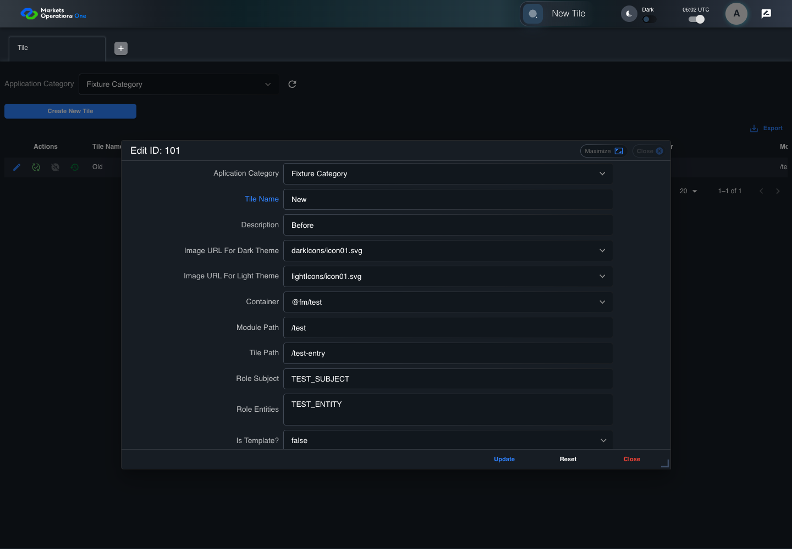

UX-057 administration boundary with step screenshots
PASS · application/run-050/ux-057-administration-boundary-with-step-screenshots-192e63f68e58-attempt-1 · ACTUAL_APPLICATION_LOCAL_SERVICES
Actual React administration screens. Controlled browser credentials, role, records, and BFF responses. Save probes persist the received UI payload without replacing it with expected values. Declared clock emulation controls field timers. Proposed accessibility and source-risk expectations remain separate from business approval.
2026-10-22T06:02:24.183Z to 2026-10-22T06:02:30.310Z
Assertions and result · Artifact manifest · Exact run inputs and source hashes
Result SHA-256:645dc2aff21c1bc86a08899501ea0fec5f77b0670ee07752466ed30db0ed7ca6Screenshot capture: CAPTURED. Named frames: 8.
Step screenshot bindings: COMPLETE. 7/7 canonical steps have execution screenshots.
Bindings measure structural coverage only. They do not establish screenshot content quality or relevance.
Screenshot content review: NOT_REVIEWED. Recorded context: 0/8 frames. Identical image bytes: 0 repeated frames. Recorded context does not establish human visual review.
Canonical step timeline
Given ADMIN-A has T1 record101 loaded with name "Old" and description "Before"
Execution: PASSED.1. step-01 Visible state after step 1: Given ADMIN-A has T1 record101 loaded with name "Old" and description "Before"
2026-10-22T06:02:29.075Z · 1440×1000
Step: /Users/lushevol/code/github/ratan-release-impact/workbench/tasks/ui-test-coverage-20261022/test-cases.md:14098
SHA-256:4d8af200fb69b5ad32fa9a8117562376b36c2b7c62d896005f9e1bd3e3667c0dWhen ADMIN-A types "New" as the replacement value in the textbox labelled "Tile Name" in the dialog with title text "edit ID: 101" on the administration page
Execution: PASSED.
2. step-02 Visible state after step 2: When ADMIN-A types "New" as the replacement value in the textbox labelled "Tile Name" in the dialog with title text "edit ID: 101" on the administration page
2026-10-22T06:02:29.223Z · 1440×1000
Step: /Users/lushevol/code/github/ratan-release-impact/workbench/tasks/ui-test-coverage-20261022/test-cases.md:14099
SHA-256:6d28ccf7bf4febc3691a9061515e229ee3411ab3ffd2af256cdd195527c35404And The controlled event loop advances 100 milliseconds from the final name input
Execution: PASSED.3. step-03 Visible state after step 3: And The controlled event loop advances 100 milliseconds from the final name input
2026-10-22T06:02:29.327Z · 1440×1000
Step: /Users/lushevol/code/github/ratan-release-impact/workbench/tasks/ui-test-coverage-20261022/test-cases.md:14100
SHA-256:b1eda96dafdcb87d16a90ffa27002429b81ca43aae221b2c3a5050017803bd02And ADMIN-A types "After" as the replacement value in the textbox labelled "Description" in the dialog with title text "edit ID: 101" on the administration page
Execution: PASSED.4. step-04 Visible state after step 4: And ADMIN-A types "After" as the replacement value in the textbox labelled "Description" in the dialog with title text "edit ID: 101" on the administration page
2026-10-22T06:02:29.448Z · 1440×1000
Step: /Users/lushevol/code/github/ratan-release-impact/workbench/tasks/ui-test-coverage-20261022/test-cases.md:14101
SHA-256:dfc670c5b85c77bf9d62bb32c5f645eeed1d819c17db822873d43f82d3a3af36And The controlled event loop completes every pending field callback
Execution: PASSED.5. step-05 Visible state after step 5: And The controlled event loop completes every pending field callback
2026-10-22T06:02:29.591Z · 1440×1000
Step: /Users/lushevol/code/github/ratan-release-impact/workbench/tasks/ui-test-coverage-20261022/test-cases.md:14102
SHA-256:9401bcd746456d520dc52864a3ca8b3f59b83e0751497ecc539ee0b1359790d1Then The textbox labelled "Tile Name" in the dialog with title text "edit ID: 101" on the administration page has value equal to "New"
Execution: PASSED.6. step-06 Visible state after step 6: Then The textbox labelled "Tile Name" in the dialog with title text "edit ID: 101" on the administration page has value equal to "New"
2026-10-22T06:02:29.674Z · 1440×1000
Step: /Users/lushevol/code/github/ratan-release-impact/workbench/tasks/ui-test-coverage-20261022/test-cases.md:14103
SHA-256:6c2d444e93815f0c76eb91986b4acdcb32720b1fc155e72bb3d9bcfc521a0ac8And The textbox labelled "Description" in the dialog with title text "edit ID: 101" on the administration page has value equal to "After"
Execution: PASSED.7. step-07 Visible state after step 7: And The textbox labelled "Description" in the dialog with title text "edit ID: 101" on the administration page has value equal to "After"
2026-10-22T06:02:29.760Z · 1440×1000
Step: /Users/lushevol/code/github/ratan-release-impact/workbench/tasks/ui-test-coverage-20261022/test-cases.md:14104
SHA-256:32c61a17eb7163ec8599f4ee14e1cf6da9070e3b3825f4193298fd1cfa4722b2
Additional named frames
Screenshots establish visible state only. Assertions and traces support functional claims.